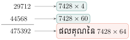
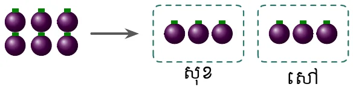
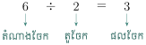
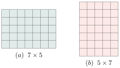
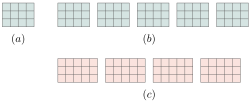
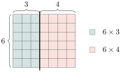
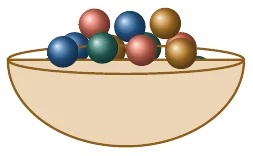

- បង្ហាញសញ្ញាណចំនួនគត់និងតាងចំនួនគត់លើបន្ទាត់ចំនួន
- ប្រៀបធៀបលំដាប់លំដោយនៃចំនួនគត់
- គណនាផលបូក ដក គុណ ឬចែកនៃចំនួនគត់
- ដោះស្រាយចំណោទដែលទាក់ទងនឹងចំនួនគត់ ។
1. សញ្ញាណចំនួនគត់
ប្រព័ន្ធរាប់ដែលគេប្រើសព្វថ្ងៃនេះហៅថាប្រព័ន្ធ គោលដប់ ។ ប្រព័ន្ធរាប់នេះមានដប់លេខគឺ \(\displaystyle 0, 1, 2, 3, 4, 5, 6, 7, 8\) និង \(\displaystyle 9\) ។ គេសរសេរតួលេខតាងចំនួនដោយប្រើលេខទាំងនេះ ។
មួយពាន់ប្រាំបួនរយហាសិបបី តាងដោយ \(\displaystyle 1953\) ។
ចំនួន \(\displaystyle 0, 1, 2, 3, 4, \dots\) ហៅថា ចំនួនគត់ ។
ចំនួនគត់ដែលខុសពី \(\displaystyle 0\) ហៅថា ចំនួនគត់ធម្មជាតិ : \(\displaystyle 1, 2, 3, 4, \dots\)
គេតាងចំនួនគត់ ដោយចំណុចនៅលើបន្ទាត់មួយហៅថា បន្ទាត់ចំនួន ។
គេសង្កេតឃើញថា ចំនួនគត់មានច្រើនរាប់មិនអស់ទេ គេពុំអាចរាប់អស់បានទេ មានន័យថាបើគេមានចំនួនគត់មួយ គេតែងមានចំនួនគត់មួយទៀតធំជាងវាជានិច្ច ។
ចំនួនគត់បន្ទាប់ពី \(\displaystyle 10\) គឺ \(\displaystyle 11\) ។
2. លំដាប់នៃចំនួនគត់
នៅលើបន្ទាត់ចំនួន គេសង្កេតឃើញថា :
- \(\displaystyle 7\) ធំជាង \(\displaystyle 4\) ហើយ \(\displaystyle 7\) នៅខាងស្តាំ \(\displaystyle 4\)
- \(\displaystyle 7\) តូចជាង \(\displaystyle 10\) ហើយ \(\displaystyle 7\) នៅខាងឆ្វេង \(\displaystyle 10\)
- គ្រប់ចំនួនគត់ដែលឋិតនៅខាងស្តាំ ធំជាងចំនួនគត់ដែលឋិតនៅខាងឆ្វេង
- គ្រប់ចំនួនគត់ដែលឋិតនៅខាងឆ្វេង តូចជាងចំនួនគត់ដែលឋិតនៅខាងស្តាំ ។
\(\displaystyle 0 < 1 < 2 < 3 < 4 < 5 < 6 < 7 \dots\) ។
ចូរកំណត់ផ្នែកនៃបន្ទាត់ចំនួន ដែលមានចំណុចតាងចំនួនគត់ “ធំជាង \(\displaystyle 4\) និងតូចជាង \(\displaystyle 11\)” ។
ចំនួនធំជាង \(\displaystyle 4\) គឺជាចំនួនដែលនៅខាងស្តាំ ចាប់ពី \(\displaystyle 5\) ទៅខាងស្តាំ
ចំនួនតូចជាង \(\displaystyle 11\) គឺជាចំនួនដែលនៅខាងឆ្វេងចាប់ពី \(\displaystyle 10\) មកខាងឆ្វេង
ដូចនេះវាជាផ្នែកនៃបន្ទាត់ចំនួនដែលមានចំនួន : \(\displaystyle 5, 6, 7, 8, 9, 10\) ។
បើគេរៀបផ្លាស់លេខ \(\displaystyle 3, 4, 5\) តើគេអាចបង្កើតចំនួនផ្សេងៗគ្នាបានប៉ុន្មាន ? តើចំនួនធំបំផុតស្មើនឹងប៉ុន្មាន ? ចំនួនតូចបំផុតស្មើនឹងប៉ុន្មាន ?
គេបាន \(\displaystyle 6\) ចំនួនគឺ : \(\displaystyle 345 \; , \; 435 \; , \; 543 \; , \; 354 \; , \; 453 \; , \; 534\)
ចំនួនធំបំផុតគឺចំនួន \(\displaystyle 543\) និងចំនួន \(\displaystyle 345\) ជាចំនួនតូចបំផុត ។
ចូរកំណត់ផ្នែកនៃបន្ទាត់ចំនួនដែលមានចំណុចតាងចំនួនគត់តូចជាង \(\displaystyle 19\) ហើយធំជាង \(\displaystyle 8\) ។
3. ចំនួនគត់គូ និងចំនួនគត់សេស
ចំនួនគត់ \(\displaystyle 2, 4, 6, 8, \dots\) ជាចំនួនគត់ចែកដាច់នឹង \(\displaystyle 2\) ។
ចំនួននេះហៅថា ចំនួនគត់គូ ។
ចំនួនគត់ \(\displaystyle 1, 3, 5, 7, \dots\) ជាចំនួនដែលមិនអាចចែកដាច់នឹង \(\displaystyle 2\) ។
ចំនួននេះហៅថា ចំនួនគត់សេស ។
- ចំនួនគត់គូ ជាគ្រប់ចំនួនគត់ដែលចែកដាច់នឹង \(\displaystyle 2\) ។
- ចំនួនគត់សេស ជាគ្រប់ចំនួនគត់ដែលចែកមិនដាច់នឹង \(\displaystyle 2\) ។
ចូររកគ្រប់ចំនួនគត់គូនៅចន្លោះ \(\displaystyle 20\) និង \(\displaystyle 43\) ។
ចំនួនគត់គូនៅចន្លោះ \(\displaystyle 20\) និង \(\displaystyle 43\) គឺ : \(\displaystyle 22, 24, 26, 28, 30, 32, 34, 36, 38, 40\) និង \(\displaystyle 42\) ។
ចូររក :
ក. គ្រប់ចំនួនគត់សេស \(\displaystyle n\) ដែល \(\displaystyle 84 < n < 99\) ។
ខ. គ្រប់ចំនួនគត់គូ \(\displaystyle n\) ដែល \(\displaystyle 72 < n \leq 90\) ។
4. ប្រមាណវិធីលើចំនួនគត់
4.1 វិធីបូកនិងវិធីដកនៃចំនួនគត់
ក. រកផលបូកនៃចំនួន \(\displaystyle 735\) និង \(\displaystyle 196\)
| 7 3 5 | |
| + | 1 9 6 |
| 9 3 1 |
ខ. រកផលបូកនៃចំនួន \(\displaystyle 680 \; , \; 302\) និង \(\displaystyle 96\)
| 6 8 0 | |
| 3 0 2 | |
| + | 9 6 |
| 1 | 0 7 8 |
ដូចនេះ \(\displaystyle 735 + 196 = 931\) ។ ដូចនេះ \(\displaystyle 680 + 302 + 96 = 1078\) ។
នៅក្នុងសាលារៀនមួយមានសិស្សថ្នាក់ទី 7 ចំនួន \(\displaystyle 589\) នាក់ សិស្សថ្នាក់ទី 8 ចំនួន \(\displaystyle 546\) នាក់ និងសិស្សថ្នាក់ទី 9 ចំនួន \(\displaystyle 503\) នាក់ ។ រកចំនួនសិស្សសរុបនៅក្នុងសាលារៀន ។
ចំនួនសិស្សសរុបមាន : \(\displaystyle 589 + 546 + 503 = 1638\) នាក់ ។
ក. រកផលដករវាងចំនួន \(\displaystyle 903\) និង \(\displaystyle 347\)
| 9 0 3 | |
| - | 3 4 7 |
| 5 5 6 |
ខ. ធ្វើវិធីដក \(\displaystyle 8023 - 4571\)
| 8 0 2 3 | |
| - | 4 5 7 1 |
| 3 4 5 2 |
ដូចនេះ \(\displaystyle 903 - 347 = 556\) ។ ដូចនេះ \(\displaystyle 8023 - 4571 = 3452\) ។
ឆ្នាំនេះពូសុខប្រមូលផលសណ្តែកខៀវនិងសណ្តែកសៀងបានចំនួន \(\displaystyle 3250kg\) ក្នុងនោះគាត់ដឹងថាគាត់បានផលសណ្តែកខៀវចំនួន \(\displaystyle 1598kg\) ។ តើពូសុខបានផលសណ្តែកសៀងប៉ុន្មានគីឡូក្រាម ?
ផលដករវាងម៉ាសសណ្តែកសរុប និងម៉ាសសណ្តែកខៀវ : \(\displaystyle 3250 - 1598 = 1652\) ។
ដូចនេះ ពូសុខបានផលសណ្តែកសៀងចំនួន \(\displaystyle 1652kg\) ។
គេសង្កេតឃើញថា :
ផលបូកម៉ាសសណ្តែកខៀវនិងម៉ាសសណ្តែកសៀង : \(\displaystyle 1598 + 1652 = 3250\)
ផលដកម៉ាសសណ្តែកសរុបនិងម៉ាសសណ្តែកខៀវ : \(\displaystyle 3250 - 1598 = 1652\)
ផលដកម៉ាសសណ្តែកសរុបនិងម៉ាសសណ្តែកសៀង : \(\displaystyle 3250 - 1652 = 1598\) ។
បើ \(\displaystyle a + b = c\) នោះ \(\displaystyle a = c - b\) និង \(\displaystyle b = c - a\)
បើ \(\displaystyle a - b = c\) នោះ \(\displaystyle a = c + b\) និង \(\displaystyle b = a - c\)
តារាងខាងស្តាំបង្ហាញចំនួនភ្ញៀវទេសចរអន្តរជាតិដែលបានទិញសំបុត្រចូលទស្សនាប្រាសាទអង្គរវត្តក្នុងខែ កុម្ភៈ មីនា និងមេសា ។
រកចំនួនភ្ញៀវទេសចរសរុបក្នុងរយៈពេលបីខែ ។
| ខែ | កុម្ភៈ | មីនា | មេសា |
| ចំនួនភ្ញៀវ | 58930 | 47650 | 73280 |
ចំនួនភ្ញៀវក្នុងរយៈពេលបីខែគឺ : \(\displaystyle 58930 + 47650 + 73280 = 179860\) នាក់
ដូចនេះ ភ្ញៀវទេសចរអន្តរជាតិដែលបានចូលទស្សនាប្រាសាទអង្គរវត្តក្នុងរយៈពេលបីខែមានចំនួន \(\displaystyle 179860\) នាក់ ។
គណនាផលបូកនិងផលដកខាងក្រោម :
ក. \(\displaystyle 46382 + 6948 + 164968 + 1896\) ខ. \(\displaystyle 1712366 - 492135 - 54201\) ។
4.2 វិធីគុណនិងវិធីចែកចំនួនគត់
បន្ទះនំប៉័ងខាងមានចំនួន :
\(\displaystyle \underbrace{3 + 3 + 3 + 3}_{4 \text{ ដង}} = 4 \times 3 = 12\) ។
ចូររកផលគុណនៃចំនួន \(\displaystyle 7428 \times 64\) ។
| 7 4 2 8 | |
| \(\displaystyle \times\) | 6 4 |
| 2 9 7 1 2 | |
| + | 4 4 5 6 8 0 |
| 4 7 5 3 9 2 |
ឬ
| 7 4 2 8 | |
| \(\displaystyle \times\) | 6 4 |
| 2 9 7 1 2 | |
| + | 4 4 5 6 8 |
| 4 7 5 3 9 2 |

ដូចនេះ \(\displaystyle 7428 \times 64 = 475392\) ។
គេចែកមង្ឃុត \(\displaystyle 6\) ផ្លែឱ្យសុខ និងសៅក្នុងចំណែកស្មើៗគ្នា ។ តើម្នាក់ៗទទួលបានប៉ុន្មានផ្លែ ?


\(\displaystyle 6 \div 2 = 3\)
ដូចនេះ ម្នាក់ៗទទួលបានផ្លែមង្ឃុត \(\displaystyle 3\) ផ្លែ ។
គេធ្វើវិធីចែកខាងក្រោម
ក. \(\displaystyle 6645 \div 15\)
ក. តំណាងចែក
| 6 6 4 5 | 15 \(\displaystyle \leftarrow\) តួចែក |
| - 6 0 0 0 | 443 \(\displaystyle \leftarrow\) ផលចែក |
| 6 4 5 | |
| - 6 0 0 | |
| 4 5 | |
| - 4 5 | |
| 0 | \(\displaystyle \leftarrow\) សំណល់ |
\(\displaystyle 6645 = 15 \times 443 + 0\) ។
ខ. \(\displaystyle 5406 \div 128\)
ខ.
| 5 4 0 6 | 128 |
| - 5 1 2 | 42 |
| 2 8 6 | |
| - 2 5 6 | |
| 3 0 | \(\displaystyle \leftarrow\) សំណល់ |
\(\displaystyle 5406 = 128 \times 42 + 30\) ។
បើ \(\displaystyle a \times 15 = 450\) នោះ \(\displaystyle a = 450 \div 15 = 30\)
បើ \(\displaystyle a \div 7 = 35\) នោះ \(\displaystyle a = 7 \times 35 = 245\) ។
បើ \(\displaystyle a \times b = c\) នោះ \(\displaystyle a = c \div b\) និង \(\displaystyle b = c \div a\) ។
បណ្ណាគារមួយលក់សៀវភៅក្នុងមួយថ្ងៃបាន \(\displaystyle 85\) ក្បាល ។ តើក្នុងរយៈពេលពីរសប្តាហ៍បណ្ណាគារនោះនឹងលក់សៀវភៅបានប៉ុន្មានក្បាល បើក្នុងមួយថ្ងៃៗលក់បានសៀវភៅស្មើៗគ្នា ?
ចំនួនសៀវភៅសរុបដែលបណ្ណាគារលក់បានទាំងអស់
\(\displaystyle 85 \text{ ក្បាល} \times 14 \text{ ថ្ងៃ} = 1190 \text{ ក្បាល}\) ។
ដូចនេះ ក្នុងរយៈពេលពីរសប្តាហ៍បណ្ណាគារលក់សៀវភៅបានចំនួន \(\displaystyle 1190\) ក្បាល ។
សាលារៀនមួយមាន \(\displaystyle 32\) បន្ទប់ និងមានសិស្សចំនួន \(\displaystyle 1280\) ។ បើបន្ទប់រៀននីមួយៗមានចំនួនសិស្សស្មើគ្នា រកចំនួនសិស្សសម្រាប់បន្ទប់រៀននីមួយៗ ។
ចំនួនសិស្សក្នុងបន្ទប់រៀននីមួយៗ \(\displaystyle 1280 \div 32 = 40\) ។
ដូចនេះ ក្នុងបន្ទប់រៀននីមួយៗមានសិស្សចំនួន \(\displaystyle 40\) ។
ចូរធ្វើវិធីចែក និងវិធីគុណខាងក្រោម :
ក. \(\displaystyle 669292 \div 122\) ខ. \(\displaystyle 7769 \times 324 \times 189\) ។
5. លក្ខណៈនៃប្រមាណវិធី
5.1 លក្ខណៈនៃវិធីបូក
គេដឹងថា \(\displaystyle 4 + 5 = 9\) និង \(\displaystyle 5 + 4 = 9\)
ដូចនេះ \(\displaystyle 4 + 5 = 5 + 4 = 9\) ។
គេឃើញថាលំដាប់នៃការបូកពីរចំនួនមិនប្រែប្រួលលទ្ធផលទេ ។ ក្នុងករណីនេះ គេថាវិធីបូកមានលក្ខណៈត្រឡប់ ។
គេដឹងថា \(\displaystyle 2 + 3 + 5 = (2 + 3) + 5 = 5 + 5 = 10\)
ម្យ៉ាងទៀត \(\displaystyle 2 + 3 + 5 = 2 + (3 + 5) = 2 + 8 = 10\)
ដូចនេះ \(\displaystyle 2 + 3 + 5 = (2 + 3) + 5 = 2 + (3 + 5)\) ។
គេឃើញថាលំដាប់នៃការផ្តុំពីរចំនួនមិនប្រែប្រួលលទ្ធផលទេ ។ ក្នុងករណីនេះ គេថា វិធីបូកមានលក្ខណៈផ្តុំ ។
គេដឹងថា \(\displaystyle 1 + 0 = 1\) និង \(\displaystyle 0 + 1 = 1\) ។
ដូចនេះ \(\displaystyle 1 + 0 = 0 + 1\) ចំនួន \(\displaystyle 0\) ហៅថា ធាតុណឺតចំពោះវិធីបូក ។
ចំពោះគ្រប់ចំនួនគត់ \(\displaystyle a, b\) និង \(\displaystyle c\)
- \(\displaystyle a + b = b + a \quad , \quad a + (b + c) = (a + b) + c\)
- \(\displaystyle a + 0 = 0 + a = a \quad , \quad 0\) ជា ធាតុណឺតចំពោះវិធីបូក ។
5.2 លក្ខណៈនៃវិធីគុណ
រូប \(\displaystyle (a) : 7 \times 5 = 35\)
និងរូប \(\displaystyle (b) : 5 \times 7 = 35\) ។
ដូចនេះ \(\displaystyle 7 \times 5 = 5 \times 7 = 35\) ។
គេថាវិធីគុណមានលក្ខណៈត្រឡប់ ។

រូប \(\displaystyle (a) : 3 \times 4\)
រូប \(\displaystyle (b) : 5 \times (3 \times 4)\) និងរូប \(\displaystyle (c) : 4 \times (3 \times 5)\)
រូប \(\displaystyle (b) : 5 \times (3 \times 4) = 5 \times 12 = 60\)
រូប \(\displaystyle (c) : 4 \times (3 \times 5) = 4 \times 15 = 60\)
ដូចនេះ វិធីគុណមានលក្ខណៈផ្តុំ ។

តាមរូបបង្ហាញថា : \(\displaystyle 6 \times (3 + 4) = (6 \times 3) + (6 \times 4)\) និង
\(\displaystyle (3 + 4) \times 6 = (3 \times 6) + (4 \times 6)\) ។

គេឃើញថា វិធីគុណមានលក្ខណៈបំបែកចំពោះវិធីបូក ។
គេដឹងថា \(\displaystyle 1 \times 14 = 14\) និង \(\displaystyle 14 \times 1 = 14\) ។
ចំនួន \(\displaystyle 1\) ហៅថា ធាតុណឺតចំពោះវិធីគុណ ។
ចំពោះគ្រប់ចំនួនគត់ \(\displaystyle a, b\) និង \(\displaystyle c\)
| \(\displaystyle \bullet \quad a \times b = b \times a\) | \(\displaystyle \bullet \quad a \times (b \times c) = (a \times b) \times c\) |
| \(\displaystyle \bullet \quad a(b + c) = (a \times b) + (a \times c)\) | \(\displaystyle \bullet \quad a \times 1 = 1 \times a = a \quad ,\) |
| \(\displaystyle 1\) ជា ធាតុណឺតចំពោះវិធីគុណ ។ |
ចានមួយមានគ្រាប់ឃ្លីច្រើនជាង \(\displaystyle 80\) គ្រាប់ ប៉ុន្តែតិចជាង \(\displaystyle 90\) គ្រាប់ ហើយវាស្មើនឹង \(\displaystyle 7\) ដងនៃផលបូកតួលេខនៃចំនួនឃ្លីទាំងអស់ ។ តើក្នុងឃ្លីសរុបដែលមាននៅក្នុងចានមានចំនួនប៉ុន្មានគ្រាប់ ?

តាង \(\displaystyle n\) ជាចំនួនគ្រាប់ឃ្លីទាំងអស់ដែល \(\displaystyle 80 < n < 90\)
បើ \(\displaystyle n = 81\) នោះ \(\displaystyle (8 + 1) \times 7 = 63 < 80 \quad (\text{មិនផ្ទៀងផ្ទាត់})\)
\(\displaystyle n = 82\) នោះ \(\displaystyle (8 + 2) \times 7 = 70 < 80 \quad (\text{មិនផ្ទៀងផ្ទាត់})\)
\(\displaystyle n = 83\) នោះ \(\displaystyle (8 + 3) \times 7 = 77 < 80 \quad (\text{មិនផ្ទៀងផ្ទាត់})\)
\(\displaystyle n = 84\) នោះ \(\displaystyle (8 + 4) \times 7 = 84 \quad , \quad 80 < 84 < 90 \quad (\text{ផ្ទៀងផ្ទាត់})\)
\(\displaystyle n = 85\) នោះ \(\displaystyle (8 + 5) \times 7 = 91 > 90 \quad (\text{មិនផ្ទៀងផ្ទាត់})\)
ដូចនេះនៅក្នុងចានមានឃ្លីទាំងអស់ចំនួន \(\displaystyle 84\) គ្រាប់ ។
ខ្លឹមសារ៖ សៀវភៅពុម្ពគណិតវិទ្យាថ្នាក់ទី៧ របស់ក្រសួងអប់រំ យុវជន និងកីឡា · វាយអត្ថបទ គូររូបភាពឡើងវិញ និងរៀបចំលើអនឡាញដោយលោកគ្រូ សាន សុខលី សម្រាប់ការសិក្សាដោយឥតគិតថ្លៃ និងមិនរកប្រាក់ចំណេញ។ មិនមែនជាការបោះពុម្ពផ្លូវការរបស់ក្រសួងទេ។